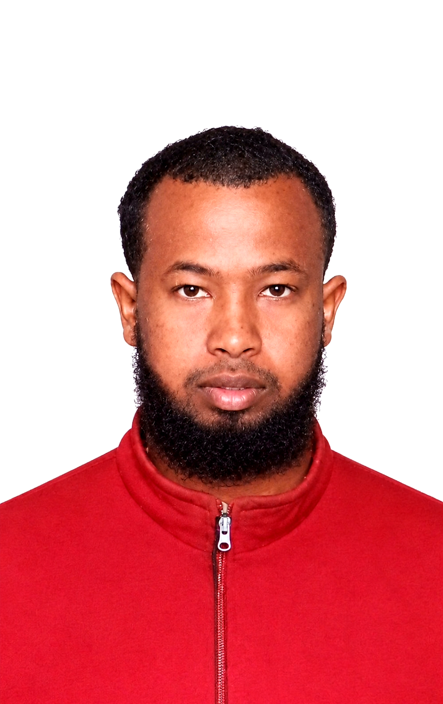

CATEGORY 01
{""}Programming Languages
Core programming languages for learning problem-solving and software development.
TECHNOLOGIES & FOCUS
SELECT ANOTHER CATEGORY TO EXPLORE

I’m a fourth-year Software Engineering student building a strong foundation in programming, web development, and database systems. I enjoy turning requirements into clear interfaces, structured data, and practical software solutions.
A concise introduction to my approach, technical interests, and current development journey.
Software Engineering Student
I’m Hubeyb Awol Mohammed, a fourth-year Software Engineering student interested in building useful, accessible, and well-structured digital products. My learning spans programming fundamentals, responsive web interfaces, backend concepts, and relational databases.
I value clear problem definition, maintainable code, thoughtful user experience, and continuous improvement. I’m developing my skills through coursework, independent practice, and hands-on projects.
A practical overview of the languages, tools, and concepts I have studied and practiced. Select a category to explore the current toolkit.
Core technologies and areas of ongoing practice.
Core programming languages for learning problem-solving and software development.
My academic foundation and the technical areas I’m actively developing. Professional experience is not listed unless it can be verified.
Interested in software engineering, frontend and backend development, database systems, and building practical applications.
A polished CV should include verified contact details, institution, dates, project outcomes, and any relevant experience. These details should be confirmed before a CV is shared with employers.
Request CV details ↗Explore my collaborative development projects and personal work. Featured projects are listed below, and public repositories from my GitHub profile are loaded automatically.
Visit my GitHub profile ↗Connecting to GitHub profile…
A travel agency website that helps users explore flights, hotels, holiday packages, and car rentals. It includes destination pages with descriptions, images, and attractions, plus customer reviews and feedback for hotels and packages.
The disciplines I’m developing through structured learning and practical exercises.
Semantic structure, responsive layouts, and accessible user interfaces.
Application logic, request handling, and backend fundamentals.
Relational modelling, SQL queries, and data integrity concepts.
Problem decomposition, maintainable code, and iterative development.
For collaboration, project discussions, or professional opportunities, use the contact details configured below.
Fourth-year Software Engineering student interested in collaboration, practical software projects, and opportunities to keep growing as a developer.